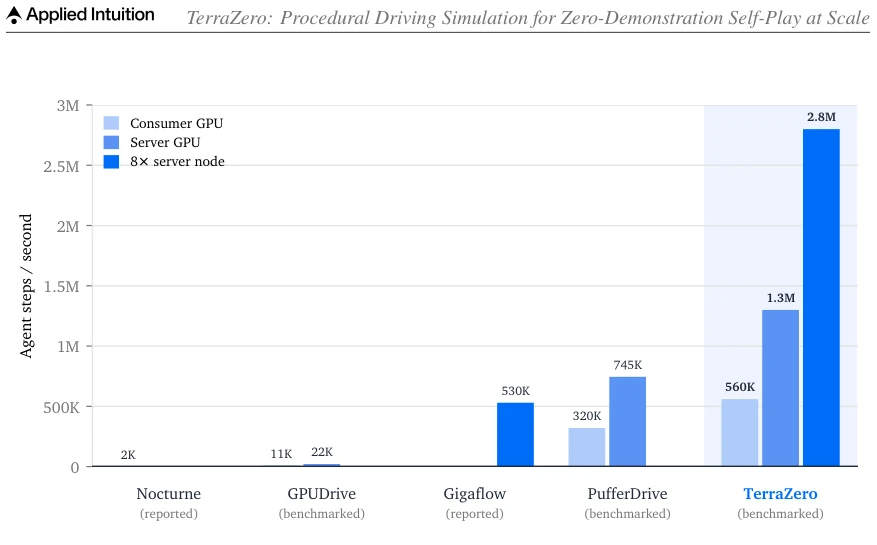
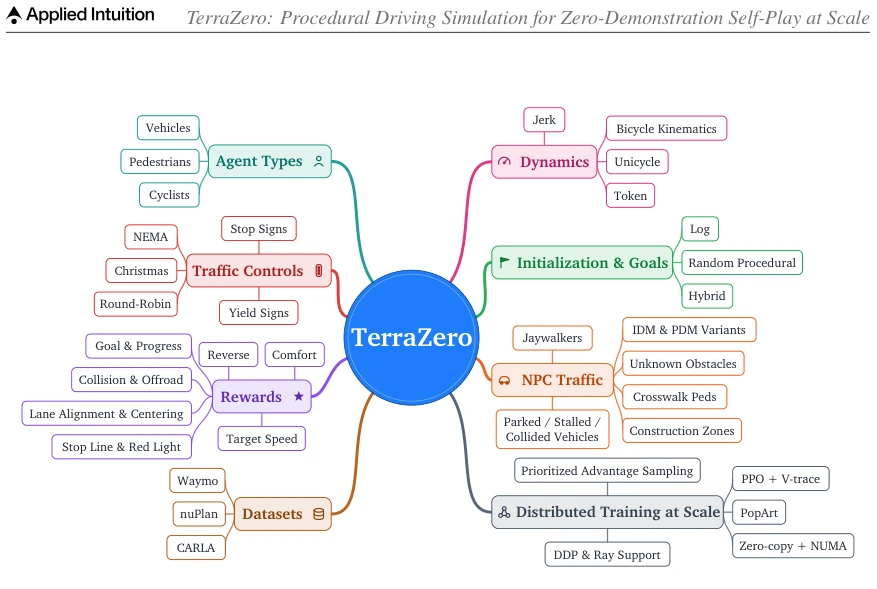
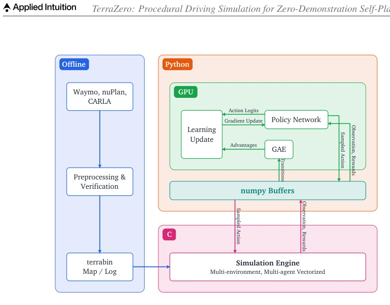
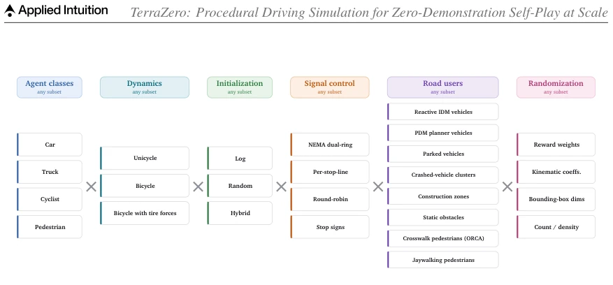
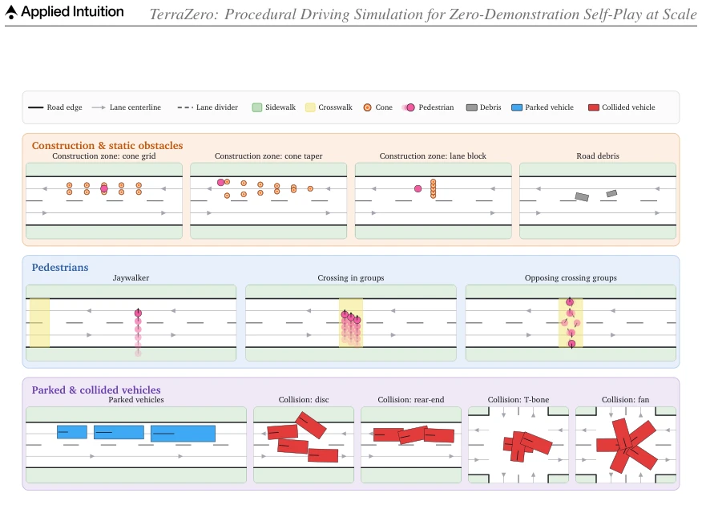
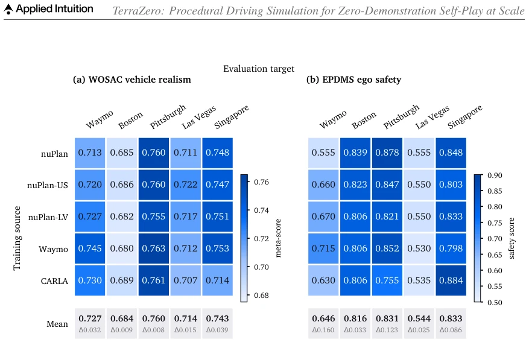
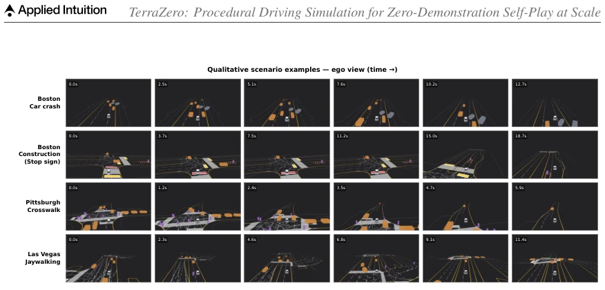

The name TerraZero is catchy, focusing on zero-demonstration self-play. It indeed pushes simulation speed to a new height; a single-card server can run 1.3 million steps/sec, significantly faster than PufferDrive and GPUDrive, and it also supports multi-agent, traffic lights, and heterogeneous dynamics, which is stronger than simulators focused purely on speed. However, it uses real maps as geometric skeletons, filled with rule-generated NPCs, which counts as 'half-real, half-fake'. The most amazing part is training policies without using any human data, relying purely on RL self-play, even emergently learning left-hand driving; this generalization ability is indeed enviable. But the cost is, whether such highly proceduralized scenes will cause the policy to collapse when encountering 'unseen' sensor noise in the real world? After all, it doesn't mention pixel-level rendering, relying purely on structured states, so realism transfer still faces challenges. In short, it is a training ground, but still far from real-world road testing.
Autonomous driving training faces a classic contradiction: simulators are either fast but fake, or real but slow. Existing object-level simulators like Nocturne [46] and PufferDrive [10] are fast, but only support single vehicle types and lack traffic lights; while CARLA [18] and SMARTS [57] are feature-rich, but too slow to run large-scale reinforcement learning. Imitation learning relies on real data, but long-tail safety scenarios in real data (such as cut-ins, sudden pedestrian appearance) are too few, making distribution gap hard to bridge [5]. Gigaflow [13] although did self-play, relies on synthetic maps and has simple dynamics. TerraZero aims to fill this gap, using procedural generation to create long-tail scenarios from real maps, while maintaining high throughput, achieving zero-human-demonstration self-play training.

Fig. 5. Training throughput. Agent steps per second across hardware configurations. TerraZero achieves competitive throughput on a single consumer GPU and the highest throughput on server hardware, while retaining full scenario fidelity including traffic signals, heterogeneous agents, and reactive traffic.
The overall architecture is divided into offline data pipeline and online training loop. The offline part converts Waymo [20], nuPlan [5], and CARLA [18] data into compact terrabin format. The online part adopts CPU/GPU division of labor: C engine handles dynamics, rewards, and rules (CPU), PyTorch handles policy inference (GPU), transmitting via zero-copy shared memory to avoid serialization overhead. The core innovation lies in procedural scene generation: a single real map through randomization initialization (Log/Random/Hybrid), target assignment, Actor diversification (size, dynamics), rule-based NPCs (IDM/PDM vehicles, pedestrians, construction zones), and signal control (NEMA/Christmas/Round-robin) combinations, generating infinite scenarios. Training adopts PPO self-play, introducing V-trace off-policy correction, PopArt value normalization, priority sampling, and domain randomization (reward weights, kinematic coefficients), breaking self-play symmetry to ensure policy generalization.

Fig. 1. TerraZero at a glance. TerraZero couples three pillars: a fast object-level simulator, a procedural sce- nario generator, and a self-play training recipe. Each branch is an axis the system can control: how agents move, who shares the road, how episodes begin, the rule-based traffic and signal controllers that populate the scene, the reward terms, the source datasets, and the machinery that scales training across GPUs. A configuration fixes some of these choices and randomizes the rest across episodes, which is how TerraZero manufactures hard scenarios from real-world map data.

Fig. 2. System architecture. The offline data pipeline (left) converts Waymo, nuPlan, and CARLA scenarios into a compact binary scenario format (Section 3.4). At runtime, the C simulation engine (bottom) exchanges actions and observations with the GPU training loop (top) through shared, zero-copy numpy buffers, with the PPO learning update driving policy improvement.

Fig. 3. Composable configuration axes. A scenario is composed by choosing a subset of options along each of six independent axes: agent classes, per-class dynamics, initialization, signal control, rule-based road users, and per-episode randomization. Because the axes compose freely, a single map seeds a combinatorially large space of scenarios.

Fig. 4. Rule-based road users. Schematic of how TerraZero procedurally generates its scripted road users, drawn on synthetic whole-lane frames with solid road edges, white dashed lane dividers, grey direction- carrying centerlines, and green sidewalks. The top row shows the construction and static-obstacle generators that close a lane (a tiled cone grid, a diagonal taper, and a perpendicular lane-block, each with a stationary worker, alongside random road debris); the middle row the pedestrian generators as faded temporal trails (a mid-block jaywalker, a one-direction pack, and an opposing bidirectional group bowing apart under ORCA avoidance); and the bottom row the vehicle generators (curb-anchored parked cars, buses, and trucks, and the four pre-arranged collided-vehicle clusters: unifo
Validated on Waymo, nuPlan, and CARLA datasets. The planner performs excellently on nuPlan val14, with best safety metrics (collisions, TTC); tops the InterPlan long-tail benchmark, superior to other learning planners. Simulation agents achieve higher realism scores on Waymo Open Sim Agents (WOSAC) than other demonstration-free methods. Throughput tests show single-card server reaches 1.3M steps/sec, 8-card node reaches 2.8M steps/sec, far exceeding existing simulators. Mechanism analysis shows domain randomization and population game are crucial for generalization; policies can zero-shot transfer across different cities, even learning left-hand driving.

Fig. 6. Transfer matrices across datasets and cities. Each TerraZero policy trains on one source (row) and is scored zero-shot on each target (column), under (a) the WOSAC 2024 vehicle-realism meta-score and (b) the NAVSIM v2 EPDMS core ego-safety score, where darker is higher. Both panels band by column rather than by row, so a policy’s score is set by the evaluation target and not by the source it trained on. The bottom strip of each panel gives the per-target mean with the across-source spread (Δ, max minus min) below it. Row labels abbreviate the nuPlan US-cities and Las Vegas training splits; CARLA is a source only, since its maps carry no logged trajectories to score.

Fig. 7. Qualitative ego-policy rollouts. Four safety-critical scenario types and cities (top to bottom: a Boston car crash, a Boston stop-sign construction zone, a Pittsburgh crosswalk, and a Las Vegas jaywalking pedes- trian). Each row is a single episode shown as a left-to-right time sequence in the ego view; the TerraZero policy sustains progress while avoiding collisions and yielding to vulnerable road users.